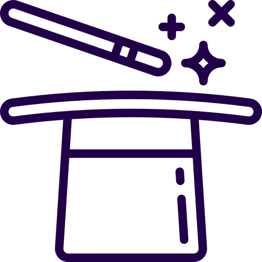

<!--
  Generated template for the CrearTrucoPage page.

  See http://ionicframework.com/docs/components/#navigation for more info on
  Ionic pages and navigation.
-->
<ion-header>

  <ion-navbar>
    <ion-title>Proponer un truco</ion-title>
  </ion-navbar>

</ion-header>


<ion-content padding>
  <br>
<ion-item><ion-input style="color:gray" type="text" name="" value="" placeholder="Ingrese su propuesta de truco"></ion-input></ion-item><br>
<button style="margin-left:27%;" (click)="volverInicio() " ion-button type="button" name="button">Enviar propuesta</button>
</ion-content>
